Epigenomic Regulation of Tail Regeneration in Deroceras laeve
Whole-genome bisulfite sequencing + RNA-seq + gene regulatory network integration
Central question: How does DNA methylation regulate gene expression during tissue regeneration in an invertebrate?
Central answer: It doesn't regulate expression directly. Instead, methylation marks network topology -- it targets genes based on their position in co-expression networks, not to control their transcriptional output. The classical "hypermethylation = silencing" rule is entirely absent.
The Organism
Deroceras laeve (gray field slug) is a gastropod mollusk -- a non-model invertebrate that can regenerate its tail after amputation. This is only the second gastropod whole methylome ever published and the first study of DNA methylation dynamics during regeneration in any invertebrate.
Experimental Design
| Data Type | Samples | Comparison | Method |
|---|---|---|---|
| WGBS (methylation) | C1, C2 vs A1, A2 | Control vs Amputated tails | Bismark → DSS |
| RNA-seq (tail) | C1S1-C4S4 vs T2S6-T4S8 | Control vs Amputated | DESeq2 |
| RNA-seq (multi-tissue) | 6 tissues x 4 conditions | Meta-analysis for WGCNA | WGCNA signed network |
Tissues: tail, eye, body wall, head, juvenile, ovotestis
Conditions: control, amputated, irradiated, fungicide
Note: T1S5 was removed as an outlier during WGCNA analysis.
Analysis Pipeline
Key Numbers at a Glance
| Metric | Value | Interpretation |
|---|---|---|
| DMPs detected | 18,754 | Widespread methylation response to amputation |
| DMRs detected | 1,424 | Coordinated regional methylation changes |
| Intergenic DMPs | ~63% | Most methylation changes are NOT at promoters |
| MI (meth dir → expr dir) | 0.00009 bits (p=0.55) | Zero predictive relationship |
| Global ρ (meth vs expr) | -0.005 (p=0.80) | No genome-wide correlation |
| Best within-module |r| | 0.81 | Strong module-specific correlations exist |
| Hub kME vs methylation ρ | +0.176 (p=0.007) | More connected = more methylated (paradox) |
| ICP promoters | 91.6% | CpG island model structurally inapplicable |
| Cochran-Armitage z | 1.009 (p=0.31) | No dose-response → binary switch |
| Hox genes with DMPs | 0/27 | Master regulators are protected |
| TF DMP enrichment OR | 1.607 (p=4.32e-13) | TFs targeted but expression-protected (0/6 DE TFs methylated) |
| DMP clustering rate | 73x expected | DMPs form coherent regulatory domains |
Finding 1: MI = 0 -- Methylation Direction Does NOT Predict Expression Direction
Result: Mutual information between methylation direction (hyper/hypo) and expression direction (up/down) is MI = 0.00009 bits (p = 0.55). The classical "hypermethylation = gene silencing" rule is entirely absent genome-wide.
What is Mutual Information?
MI measures how much knowing one variable reduces uncertainty about another. If methylation direction predicted expression direction, MI would be high. We found MI = 0.00009 bits -- essentially zero. Knowing whether a gene is hypermethylated tells you absolutely nothing about whether it is up- or down-regulated.
Statistical Details
MI(X; Y) = ∑∑ p(x,y) x log2[ p(x,y) / (p(x) x p(y)) ]
Our contingency table:
Up-regulated Down-regulated
Hypermethylated ~25% ~25%
Hypomethylated ~25% ~25%
MI = 0.00009 bits, p = 0.55 (10,000 permutations)
Maximum possible: 1 bit | Observed/Max: 0.009%
Why This Matters
The "methylation = silencing" model has been the default assumption for decades. Our finding means:
- Hypermethylated genes are equally likely to go UP or DOWN
- The classical model is entirely absent in this system
- Methylation is doing something else -- marking network topology, not controlling expression
- This is not noise -- methylation targeting is highly non-random (entropy H/Hmax = 0.80, clustering at 73x expected)

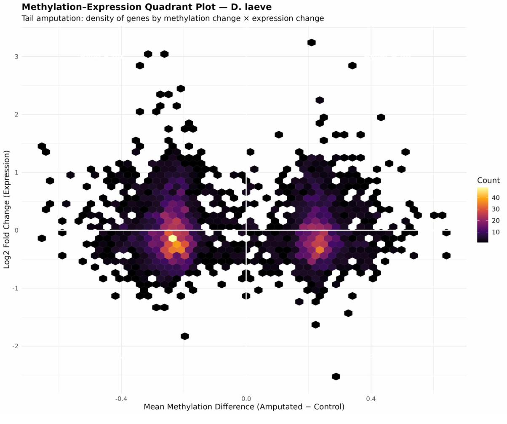
Finding 2: Intergenic Methylation Is the Primary Regulatory Mechanism
63% of DMPs fall in intergenic and intronic regions -- NOT at promoters. DMPs cluster at 73x the expected rate within 1 kb, forming coherent regulatory domains.
In mammals, methylation is a promoter story. In D. laeve, this model is structurally inapplicable: 91.6% ICP promoters, only ~12% of DMPs at promoters, intergenic DMPs show the strongest expression correlations.
Intergenic methylation changes likely mark distal regulatory elements: enhancers, silencers, and insulators. Supported by MethNet (Nature Communications, 2024), H3K4me3 at intergenic regions (Genes & Development, 2025), and enhancer methylation review (IJC, 2026).
| Evidence | Result | Interpretation |
|---|---|---|
| DMP distribution | 63% intergenic/intronic | Majority of changes are distal |
| DMP clustering | 73x expected within 1 kb | Form regulatory domains |
| Promoter DMPs vs expr | Weak/no correlation | Promoter methylation doesn't drive expression |
| Intergenic DMPs vs expr | Module-specific |r| up to 0.81 | Distal changes strongly affect expression |
| Sox19a case study | Intergenic hypermeth + UP | Enhancer/silencer methylation can activate genes |
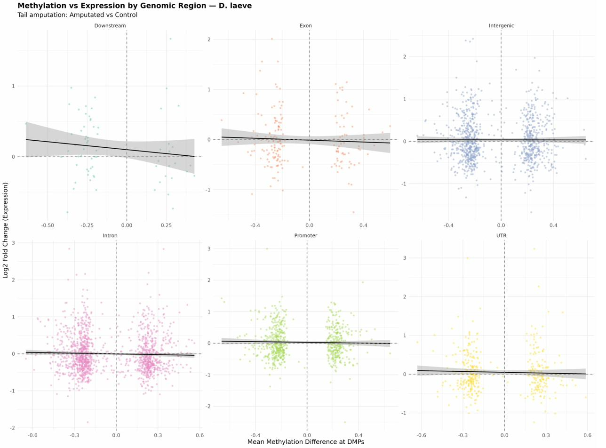

Finding 3: Methylation Is a Binary Switch, Not a Rheostat
No dose-response relationship. Cochran-Armitage: z = 1.009, p = 0.31. Whether a gene has 1 DMP at 10% or 50 DMPs at 60%, the probability of being DE is the same.
Binary Switch vs Rheostat
A rheostat = more methylation, more effect. A binary switch = presence matters, amount doesn't. Our data shows binary switch: methylation flags genes for network-level regulation, but effect depends on network context, not methylation magnitude.


Finding 4: The Hub Gene Paradox
Hub genes are methylated but NOT DE. Blue hub genes: DMR OR = 1.97 (padj = 0.033), 0 DE. kME vs methylation: ρ = +0.176, p = 0.007. Contradicts the buffering hypothesis.
Hubs are MORE methylated because of their topological importance, but the methylation signal does not translate to expression change. Methylation marks network position, not expression level.
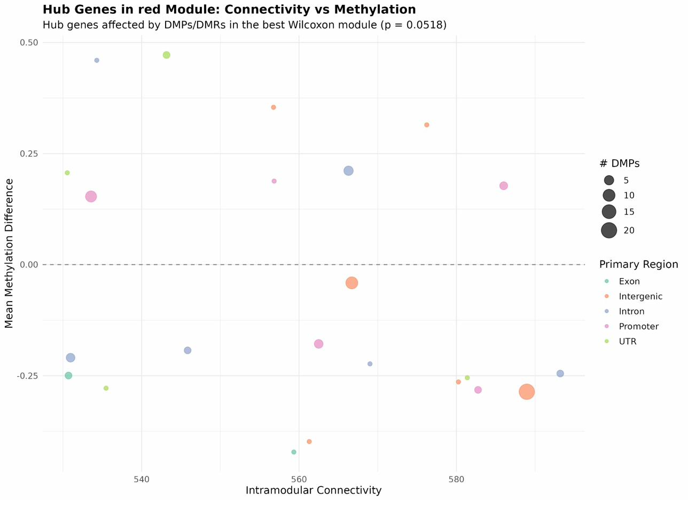
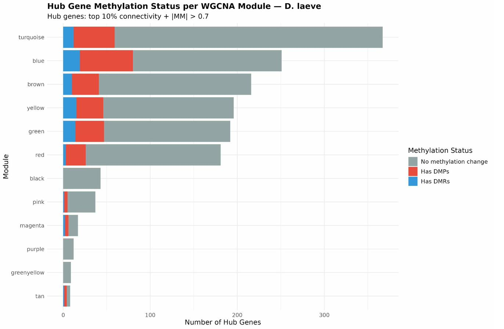
Finding 5: The Four-Layer Epigenetic Regulation Model
TFs enriched for DMPs (OR=1.607) but 0/6 DE TFs methylated.
Hubs methylated (ρ=+0.176) but NOT DE.
Yellow enriched (Fisher p<0.05).
63% DMPs intergenic/intronic.


Finding 6: 91.6% Intermediate CpG Promoters
91.6% ICP, 6.5% HCP, 1.9% LCP. Diverges sharply from mammals (~70% HCP). Renders the CpG island model structurally inapplicable.
| Class | Definition | D. laeve | Human |
|---|---|---|---|
| HCP | CpG O/E ≥ 0.75 AND GC% ≥ 55% | 6.5% | ~72% |
| ICP | CpG O/E ≥ 0.48 but not HCP | 91.6% | ~16% |
| LCP | No window with CpG O/E ≥ 0.48 | 1.9% | ~12% |


Finding 7: TFs Are Methylated but Expression-Protected
REVISED (Mar 2026): DeepTFactor CNN-based TF identification (2,217 TFs from 73,425 proteins) shows TFs are ENRICHED for DMPs (OR = 1.607, p = 4.32e-13) and DMRs (OR = 1.645, p = 3.33e-06). The old keyword-based finding (OR = 0.77 depleted) was an artifact of incomplete TF identification.
The paradox: 14.8% of TFs have DMPs (vs 9.8% non-TFs), yet 0/6 DE TFs are methylated. Methylation targets TFs but does NOT change their expression. Top methylated TFs: ZFP2 (30 DMPs), Mafb (25), ATF2 (18), Hr96 (18). DE TFs (Scrt1, REPTOR-BP, Y-box, sox8, CEBPA, Catenin) achieve expression changes WITHOUT methylation.
TE-DMP Genomic Context (New)
51.1% of DMPs overlap TEs (9,583/18,754). TE-DMPs are enriched for intergenic regions (OR = 1.305, p = 3.10e-17). DNA transposons dominate (53%), followed by LINEs (36%). 66.5% of DMRs overlap TEs.
Additional Findings
No module shows significant concordance with the classical model (all padj > 0.3). Concordance rates hover around 50% (chance). Yellow trends toward anti-concordance (43.9%, p=0.027).
Blue module hub paradox: Hub DMP rate = 26.3% vs nonhub = 16.5% (padj = 0.005). Black: 0% hub DMP rate (padj = 0.020).


Methylation Pipeline
Stage 1: Quality Control
Why BSseq + Bismark?
Bismark (Krueger & Andrews, 2011) is the gold standard for bisulfite sequencing. BSseq (Hansen et al., 2012) provides R/Bioconductor infrastructure. Pipeline Olympics (NAR 2025) confirmed Bismark has the best memory footprint (16 GB).
Precedent
Used by ENCODE, Roadmap Epigenomics, BLUEPRINT. Recently applied to non-model organisms via DMRichR FAIRification (Bioinformatics Advances, 2025).


Stage 2: DMPs & DMRs
Why DSS?
Beta-binomial model with arcsine link and Wald test. Proper dispersion estimation with n=2 replicates. Ranked top performer in DMR benchmarking (Wu et al., 2021).
Precedent
Recommended by IHEC. Used in single-cell methylomes (Luo et al. 2018 Science) and DMRichR pipeline.


Stage 3: Genomic Annotation
Why ChIPseeker?
Priority-based annotation relative to gene features. >4,000 citations. Integrates with clusterProfiler.
Precedent
Standard in epigenomics. Alternative: HOMER.


Stage 4: Functional Enrichment
Why STRING-based?
Non-model organism -- no curated GO annotations. STRING orthology-transferred annotations + clusterProfiler hypergeometric test with BH correction.
Precedent
Used in oyster, honeybee, and other non-model epigenomics. clusterProfiler: >20,000 citations.


Stage 5: Transposable Element Methylation
Key finding: TE methylation is essentially UNCHANGED during regeneration (all Cohen's d < 0.01). DMPs overlap TEs but TE methylation itself doesn't change. TEs provide genomic substrate, not targets.


RNA-seq Pipeline
Stage 1: Normalization & QC
Why DESeq2?
Negative binomial GLM with dispersion shrinkage. Handles count data properly. Provides VST for downstream analyses. >50,000 citations.
Precedent
Used in GTEx, TCGA, ENCODE. 2025 best practices (Nature Protocols) still recommends DESeq2.


Stage 2: Batch Correction
Why limma removeBatchEffect?
Removes known batch effects while preserving biology. Applied to VST for WGCNA, NOT for DE testing.
Precedent
Recommended by WGCNA authors. Used in GTEx, TCGA multi-center studies.

Stage 3: Differential Expression

Stage 4: Expression Clustering


Stage 5: WGCNA Co-expression Network
Why WGCNA?
Signed network, module detection, hub genes, trait correlations. >15,000 citations. We use signed adjacency, soft thresholding, blockwise detection.
Precedent
GTEx, cancer subtyping, invertebrate transcriptomics in oyster, honeybee, Drosophila, coral.


View module enrichment plots


Integration Analysis
Methylation vs Expression Correlation
Global correlation is null (ρ = -0.005, p = 0.80), but within-module correlations reach |r| = 0.81. Opposing module effects cancel at the genome-wide level.
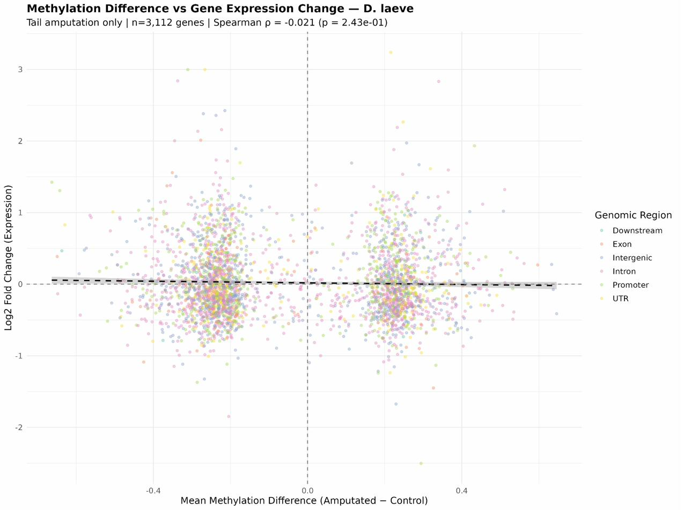


Module DMP Enrichment
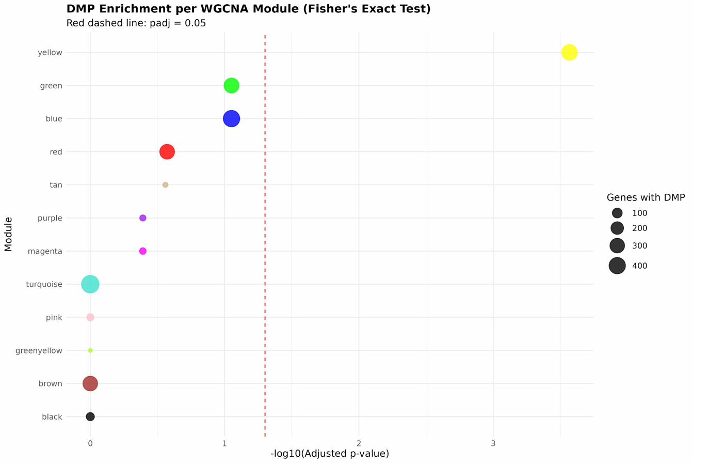
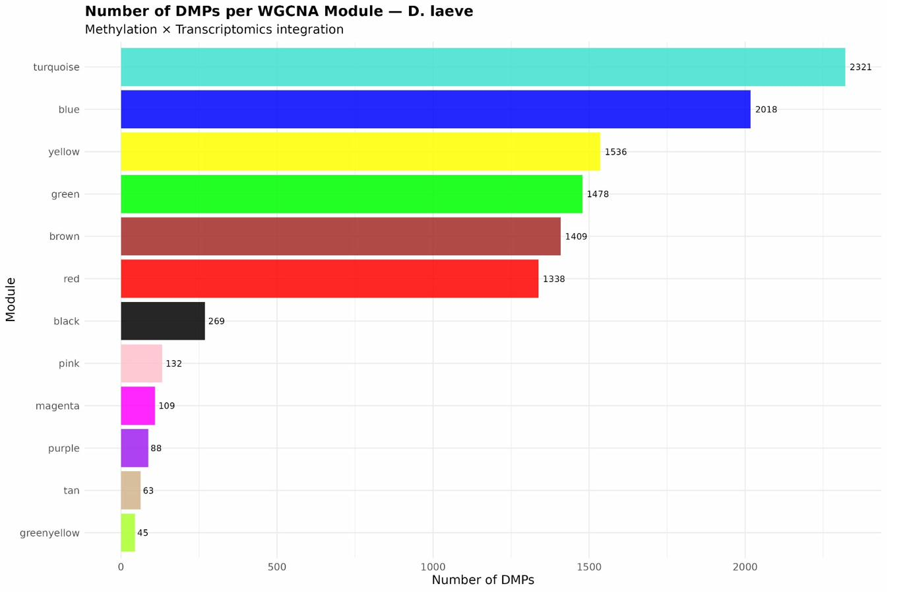
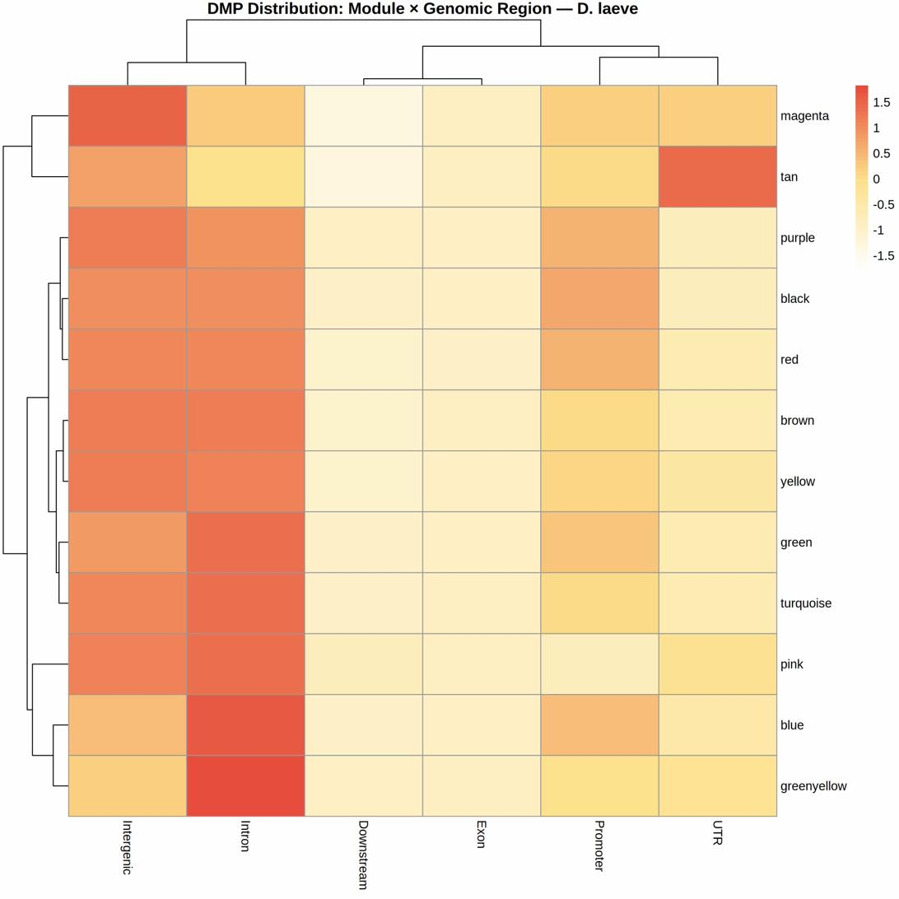
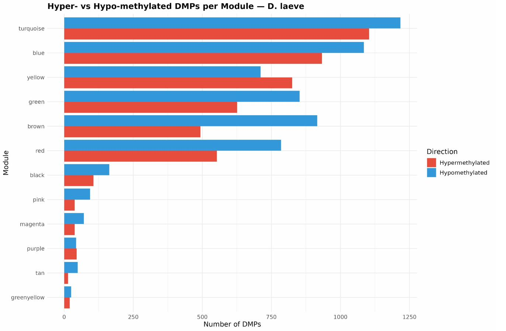
Intergenic Regulation Deep Dive
Evidence 1: Non-random spatial distribution
73x clustering within 1 kb. Consistent with super-enhancer-like regulatory regions.
Evidence 2: Distance-expression relationship
Intergenic DMPs show stronger expression correlations than promoter DMPs.
Evidence 3: Module specificity
Yellow module's DMP burden concentrated in intergenic regions.
Evidence 4: Sox19a case study
Intergenic hypermethylation + INCREASED expression = silencer methylation.


Advanced Analyses
Entropy & Information Theory
Shannon entropy: H/Hmax = 0.80 -- methylation targeting is significantly non-random. Some modules preferentially targeted, others protected.


Machine Learning Prediction
ML CANNOT predict which methylated genes will be DE. Logistic AUC = 0.635. Linear R² = 0.29. Quadratic R² = 0.33. Confirms methylation is not a direct predictor.
| Model | Performance | Interpretation |
|---|---|---|
| Logistic (baseline) | AUC = 0.635 | Weak predictor |
| Weighted linear | R² = 0.292 (NS) | Binary switch confirmed |
| Weighted quadratic | R² = 0.334 (NS) | No improvement |
| Module features | R² = 0.362 | Larger modules = higher rates (trivial) |

TE Evolutionary Age Analysis
TE methylation UNCHANGED during regeneration. All Cohen's d < 0.01. TE age spans 0-207 My.
| TE Class | Count | Median Age (My) | DMPs | Cohen's d |
|---|---|---|---|---|
| DNA | 1,230,562 | 35.3 | 5,186 | 0.003 |
| LINE | 926,462 | 37.4 | 3,427 | 0.003 |
| LTR | 356,849 | 47.3 | 787 | 0.003 |
| SINE | 246,324 | 32.4 | 580 | 0.004 |
| RC/Helitron | 96,373 | 42.1 | 408 | 0.003 |


DMR Spatial Analysis


Promoter CpG Classification


Threshold Sensitivity
Yellow module is the ONLY module with robust DMP enrichment -- significant at 68% of 25 threshold combinations (17/25). Blue: 12% (3/25). All others: 0%.
| Scenario | FDR | |diff| | DMPs | Yellow padj | Blue padj |
|---|---|---|---|---|---|
| Lenient | 1.0 | 0.10 | 18,754 | 0.00027 | 0.089 |
| Default | 0.05 | 0.10 | ~15,000 | 0.023 | NS |
| Strict | 0.01 | 0.25 | ~3,500 | 0.005 | 0.094 |
| Very strict | 0.001 | 0.30 | 1,483 | 0.15 | NS |


Deep Methylation Analysis
TFs enriched for DMPs (DeepTFactor: OR=1.607, p=4.32e-13; old keyword OR=0.322 was artifact). No dose-response: DE rate flat (0.6-2.7%) across methylation bins. 0/6 DE TFs are methylated.


Morphogenesis & Category Enrichment
Enriched: TFs (21%, OR=1.45, padj=0.0001), Cytoskeleton (21.2%, OR=1.45, padj=0.003). Depleted: RNA Processing (12%, OR=0.72, padj=0.038).


DMR Deep Analysis
0/60 large DMRs associate with DE genes. Cytoskeleton enriched (OR=2.30, padj=1.1e-6). TFs enriched for both DMRs (OR=1.58, padj=0.004) and DMPs (OR=1.607, padj=4.32e-13), but 0/6 DE TFs carry methylation changes.


Synthesis & Integrated Model
Module-Level Evidence Matrix
| Module | Size | % DMP | DMP padj | Cohen's d | Direction | Top GO |
|---|---|---|---|---|---|---|
| Yellow | 1,809 | 19.5% | 0.00027 | -1.83 | DOWN | Mitotic cell cycle |
| Blue | 2,311 | 17.6% | 0.089 | -1.67 | DOWN | -- |
| Brown | 2,052 | -- | NS | +2.04 | UP | -- |
| Red | 1,774 | -- | NS | +2.12 | UP | Translation |
| Purple | 121 | -- | NS | -3.06 | DOWN | -- |


Methods & Justification
| Method | Tool | Why | Alternatives | Reference |
|---|---|---|---|---|
| BS-seq alignment | Bismark | Best memory, gold standard | bwa-meth, BSMAP | Krueger 2011; Pipeline Olympics 2025 |
| DMP/DMR detection | DSS | Beta-binomial, works with n=2 | methylKit, dmrseq | Feng 2014; Wu 2021 |
| Annotation | ChIPseeker | Priority-based, Bioconductor | HOMER, annotatr | Yu 2015 |
| RNA-seq | DESeq2 | NB GLM, shrinkage | edgeR, limma | Love 2014 |
| Co-expression | WGCNA | Signed network, trait correlation | CEMiTool, MEGENA | Langfelder 2008 |
| TF prediction | DeepTFactor | CNN-based, no DB needed | PlantTFcat, HMMER | Kim 2021 |
| Promoter class | Weber criteria | Standard HCP/ICP/LCP | HMM-based CGI | Weber 2007 |
| MI | Custom R | Model-free dependence | Chi-square | Cover & Thomas 2006 |
| TE age | Kimura 2-param | Standard in TE biology | Jukes-Cantor | Kimura 1980 |
Cross-Species Comparison
| Species | Phylum | CpG Meth | Regen? | Dominant Pattern | Promoter |
|---|---|---|---|---|---|
| D. laeve (this study) | Mollusca | ~25% | Yes (tail) | Intergenic/intronic | 91.6% ICP |
| Danio rerio | Chordata | ~80% | Yes | Stable during regen | CpG islands |
| Schmidtea | Platyhelminthes | ~0% | Yes (whole body) | ABSENT | N/A |
| Crassostrea | Mollusca | ~15% | No | Gene body | Bimodal |
| Hydra | Cnidaria | ~28% | Yes | Intronic TE | Unknown |
| Apis mellifera | Arthropoda | ~0.2% | No | >80% exonic | Bimodal |
| B. glabrata | Mollusca | ~2% | No | Only other gastropod | Unknown |
Key Insight
The Weber HCP/ICP/LCP classification has never been applied to an invertebrate genome before. Planarians (champion regenerators) have ZERO methylation. Zebrafish methylation is STABLE during regeneration. Our finding of dynamic methylation during invertebrate regeneration is unique.
2026 Literature Landscape
New Methods
- wgbstools (2026): Fragment-level methylation, 100x compression
- MethyLasso (2024): GAM + fused lasso segmentation
- Pipeline Olympics (NAR 2025): Bismark confirmed best memory -- validates our choice
- DMRichR FAIRification (2025): Non-model organisms -- mirrors our approach
ML Revolution
- DeepMethyGene (2025): R²=0.640 in humans. Human-specific.
- MethylGPT (2024/2025): R=0.929 on 154K human methylomes
- CpGPT (2024): Pre-trained on >1,500 datasets
- All human-specific -- cannot be applied to D. laeve
Invertebrate Methylation
- Genes Special Issue (2025): "The Enigmatic Role of DNA Methylation in Invertebrates"
- Gastropod review (Life 2024): DNMT1 drives CG maintenance; only B. glabrata published
- Our study = second gastropod whole methylome ever
Regeneration Epigenomics
- Comparative regen multi-omics (Nature Comms 2026): AP-1 binding conserved
- Positional memory (Nature 2025): Molecular basis of positional memory
- Zebrafish (Genome Biology 2020): Methylation STABLE; chromatin accessibility drives it
- No invertebrate regeneration-methylation study before ours
What's Missing -- Honest Assessment
Critical Gaps
- No ATAC-seq: Need open chromatin to confirm intergenic DMPs as regulatory elements
- Only 2 WGBS replicates: Limits power and heterogeneity analysis
- No Hi-C: Can't confirm DMP-promoter physical interactions
- No time course: Single timepoint only
- No functional validation: No CRISPR, no DNMT inhibitors
Analyses to Strengthen
- DMR cross-validation with MethyLasso
- Methylation heterogeneity (Metheor: PDR/epipolymorphism)
- Co-methylation WGCNA on CpG beta values
- TSS distance systematic analysis
- Motif analysis at DMP clusters (BED files ready)
What We Got Right
- Pipeline choice validated by 2025 benchmarking
- Non-model approach mirrors DMRichR FAIRification
- Multi-omics integration (meth + expr + network + TE)
- Information-theoretic approach (model-free)
- Honest negative results (ML fails, MI=0)
Publication-Ready Figures
Gene-Level (fig01-fig10)
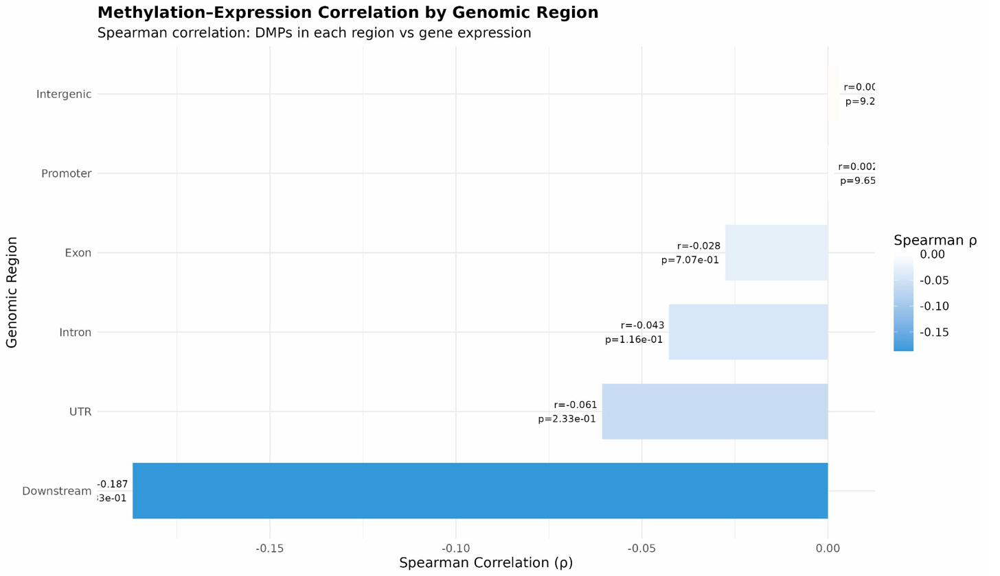
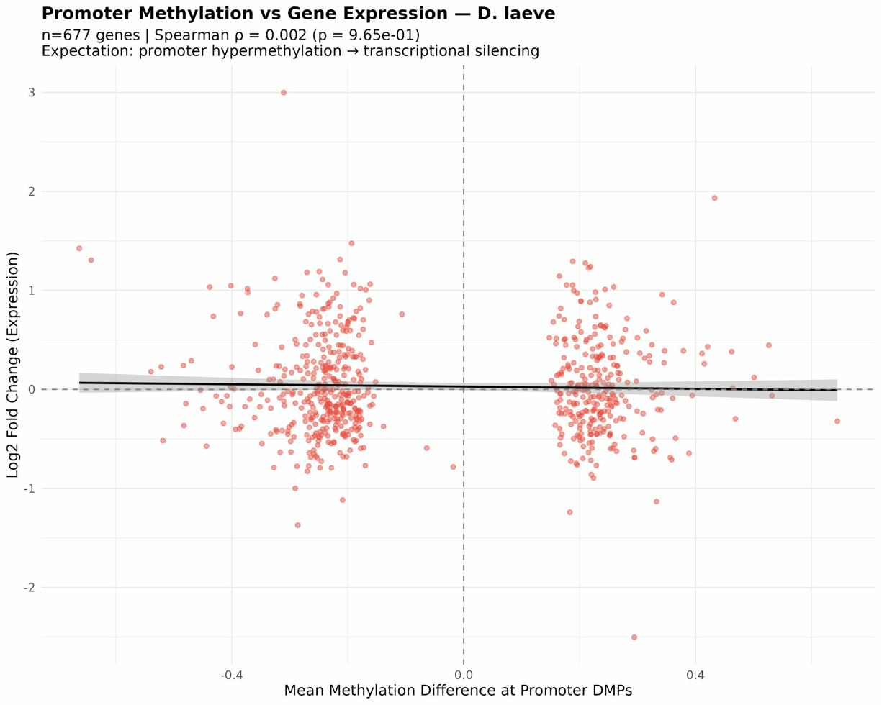
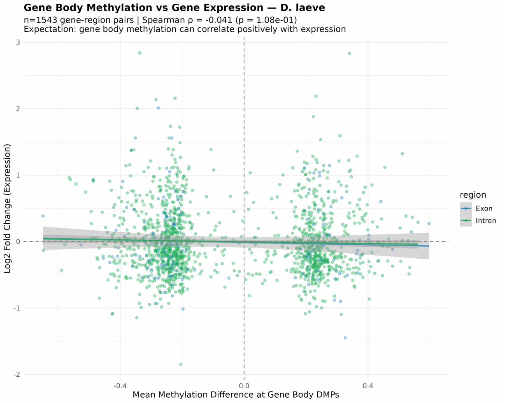
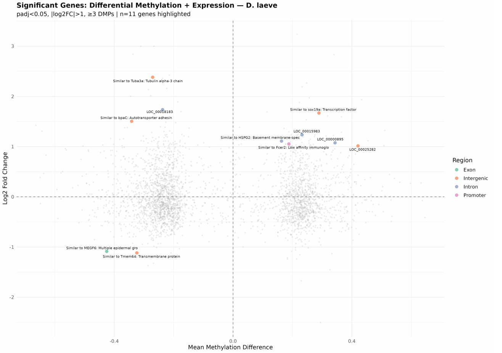
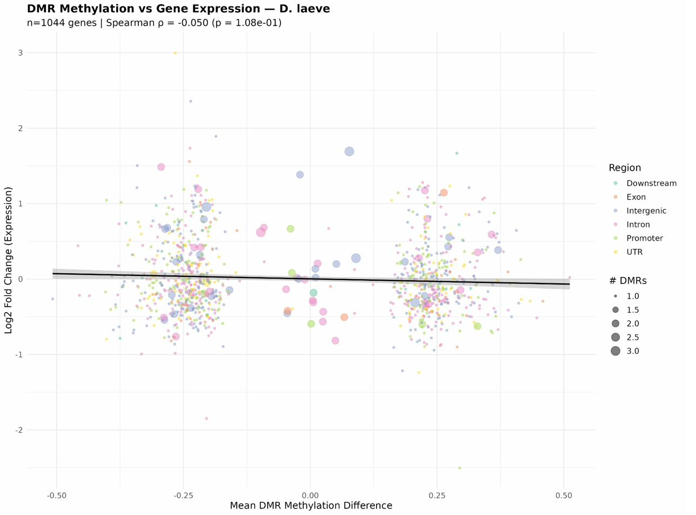
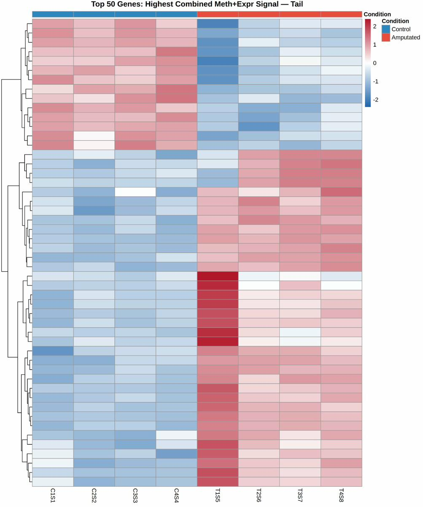
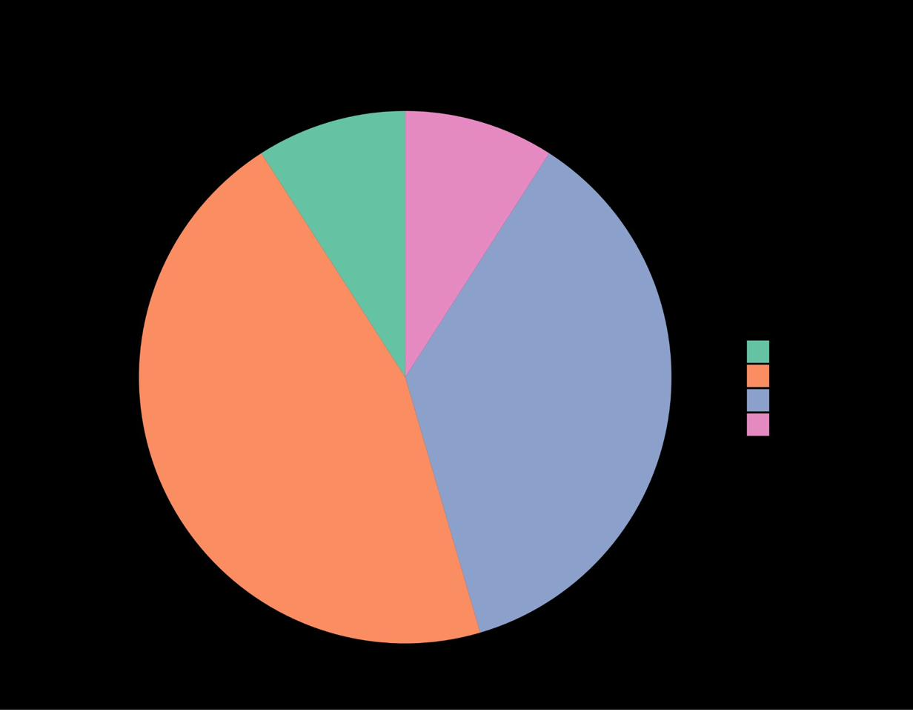
Module-Level (fig11-fig19)
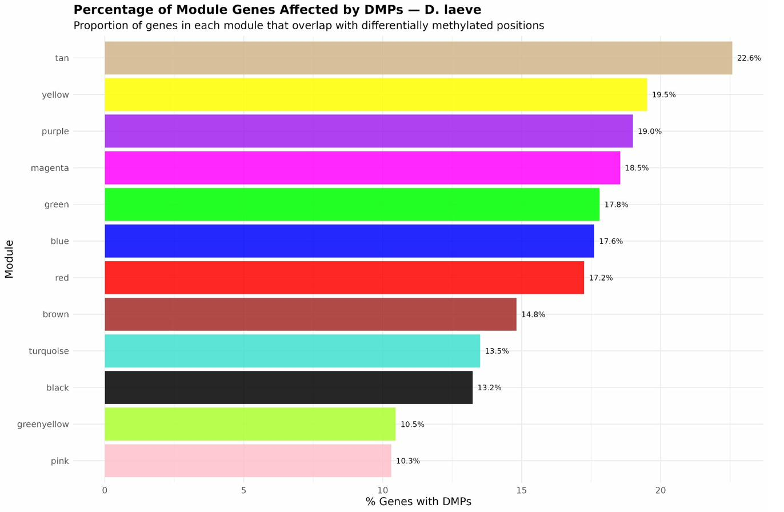
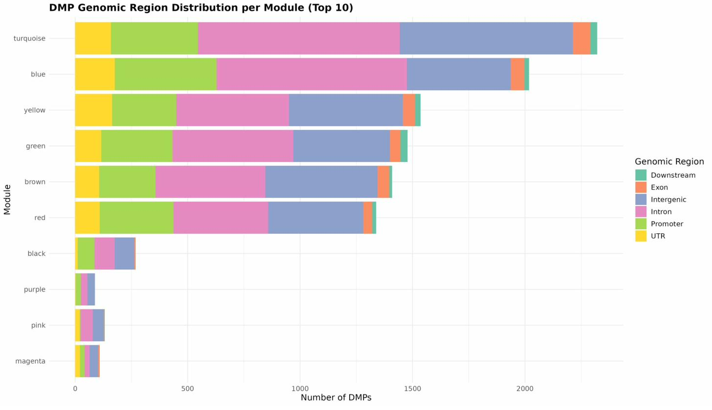
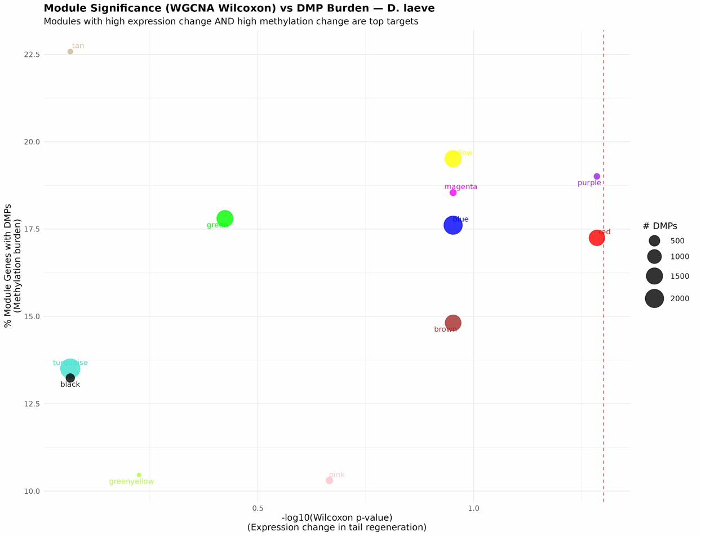
Summary / Publication Figures


Candidate Genes for Validation


Cross-Species Figures


Mathematical Formulas
Mutual Information (MI)
MI(X; Y) = sum sum p(x,y) * log2[ p(x,y) / (p(x) * p(y)) ]
X in {hypermethylated, hypomethylated}
Y in {upregulated, downregulated}
Our result: MI = 0.00009 bits (p = 0.55)
Maximum possible: 1 bit | Observed/Max: 0.009%
Shannon Entropy
H = -sum p_i * log2(p_i) H_max = log2(n modules) Normalized: H/H_max = 0.80 (1.0 = uniform, 0.0 = one module)
Cochran-Armitage Trend Test
Tests: P(DE) increases with methylation magnitude? z = 1.009, p = 0.31 -> No trend. Binary switch.
Fisher's Exact Test (Module Enrichment)
DMPs No DMPs Module genes | a | b | Other genes | c | d | OR = (a*d) / (b*c) TF enrichment (DeepTFactor): OR = 1.607, p = 4.32e-13 Old keyword result (superseded): OR = 0.77, p = 5.87e-5
Kimura 2-Parameter → Million Years
Time(My) = Kimura_div / (2 * 2.2e-9 * 1e6) Gastropod rate = 2.2e-9 per site per year 1% Kimura ~ 2.3 My | 10% ~ 22.7 My | 50% ~ 113.6 My
DSS DMP Detection (Beta-Binomial)
X_ij ~ BetaBinomial(n_ij, pi_ij, phi_j) Test: arcsin(sqrt(pi_control)) - arcsin(sqrt(pi_amputated)) DMP: FDR < 0.05 (BH) | DMR: areaStat = sum |Wald| in region
Pipeline Code Flow
Step 1: Methylation (cluster/01-methylation/)
sbatch run.slurm 01_quality_control.R # Bismark -> BSseq sbatch run.slurm 02_differential_methylation.R # DSS -> DMPs + DMRs sbatch run.slurm 03_genomic_annotation.R # ChIPseeker sbatch run.slurm 04_functional_enrichment.R # GO/KEGG sbatch run.slurm 05_te_methylation.R # TE overlap
Step 2: RNA-seq (cluster/02-rnaseq/)
sbatch run.slurm 01_normalization.R # DESeq2 sbatch run.slurm 02_batch_correction.R # limma sbatch run.slurm 03_differential_expression.R # DEGs sbatch run.slurm 04_hierarchical_clustering.R # Clustering sbatch run.slurm 05_kmeans_clustering.R # K-means
Step 3: Co-expression (cluster/03-coexpression/)
sbatch run.slurm 01_wgcna_module_detection.R # 64GB, 8 CPUs
Step 4: Integration (cluster/04-integration/)
sbatch run.slurm 01_methylation_vs_expression.R sbatch run.slurm 02_module_methylation_enrichment.R
Step 5: WGCNA Sensitivity (cluster/08-wgcna-sensitivity/)
sbatch run.slurm 01_parameter_sensitivity.R # 3-5h sbatch run.slurm 02_improved_wgcna.R # 1-2h sbatch run.slurm 03_methylation_network_integration.R # 2-4h sbatch run.slurm 04_enrichment_across_parameters.R # 6-10h (independent)
Step 6: Local Analysis (18 scripts)
Rscript local/01_blue_module_enrichment_plots.R ... Rscript local/16_cross_species_comparison.R Rscript local/17_te_tf_methylation_landscape.R # NEW Rscript local/18_sox19a_gviz_tf_chipseeker.R # NEW
Data Dependency Diagram
Bismark CpG Reports -> BSseq -> DMPs/DMRs -+
|
HTSeq Counts -> DESeq2 -> Batch -> DEGs -+ |
| |
K-means/Hier <-----+ |
| |
WGCNA Modules -+ |
| | |
Hub Genes v v
| INTEGRATION
| Meth vs Expr
| Module Enrichment
| |
+----------+---------+----------+
v v v v
Entropy/MI ML Models Cross-Spp TE/TF Landscape
Binary Switch AUC=0.635 9 Species TFs ENRICHED (OR=1.6)
0/6 DE TFs methylated
Most Probable Gene: Sox19a
Based on composite evidence, Sox19a is the strongest candidate for methylation-mediated regulation during regeneration.
| Evidence | Value | Significance |
|---|---|---|
| Expression | log2FC = 1.45, padj = 0.044 | Significantly upregulated |
| DMP count | 13 DMPs | Among highest per-gene |
| DMP location | All intergenic, 4-5 kb upstream | Consistent with silencer regulation |
| DMP direction | Hypermethylated | Silencer inactivation = UP |
| Gene function | SRY-related HMG box TF | Conserved developmental regulator |
Sox19a is regulated through intergenic DMPs. Methylation of an upstream silencer reduces repression, producing the opposite of the textbook prediction: methylation → activation. This also explains MI = 0: sometimes methylation of a silencer causes activation, sometimes methylation of an enhancer causes silencing.
Script 18 Confirmation: All 13 DMPs are hypermethylated (mean diff = +0.289), located in Distal Intergenic / Downstream regions. ChIPseeker annotations: 2 Downstream (≤300bp), 11 Distal Intergenic. Sox19a log2FC = +1.446 (upregulated). Prediction: silencer inactivation via hypermethylation.


Is WGCNA the Best Choice?
Yes, for our purpose. >15,000 citations. No alternative consistently outperforms it for module detection + trait correlation.
| Tool | Advantage | Why Not |
|---|---|---|
| WGCNA (used) | Standard, robust, trait correlation | Our choice |
| CEMiTool | Easier | Less control |
| MEGENA | Hierarchical modules | Less established |
| GENIE3 | Directed edges | Complementary |
| iNETgrate | Integrated meth+expr | Future direction |
Improvements planned: Bicor instead of Pearson, parameter sweep (7 filters x 9 powers), co-methylation WGCNA -- all in cluster/08-wgcna-sensitivity/.
Key References
Core Methods
- Krueger F, Andrews SR (2011) Bismark. Bioinformatics 27:1571
- Feng H, Conneely KN, Wu H (2014) DSS. NAR 42:e69
- Love MI, Huber W, Anders S (2014) DESeq2. Genome Biology 15:550
- Langfelder P, Horvath S (2008) WGCNA. BMC Bioinformatics 9:559
- Weber M et al. (2007) Promoter methylation. Nature Genetics 39:457
- Yu G, Wang LG, He QY (2015) ChIPseeker. Bioinformatics 31:2382
2024-2026 Key Papers
- Pipeline Olympics (2025) WGBS benchmarking. NAR 53:gkaf970
- wgbstools (2026) Fragment-level analysis. Life Science Alliance
- DMRichR FAIRification (2025). Bioinformatics Advances
- MethNet (2024) Integrating methylation and expression. Nature Communications
- DeepMethyGene (2025) Expression prediction. BMC Bioinformatics
- TE methylation and age (2025). Nature Aging
- Comparative regen multi-omics (2026). Nature Communications
- Gastropod methylation (2024). Life 14
- Invertebrate epigenetic clocks (2025). Frontiers in Genetics
D. laeve Regeneration Epigenomics Wiki -- Generated March 2026
316 figures | 262 data tables | 2 manuscript drafts | 18 analysis scripts
Pipeline: Bismark → DSS → DESeq2 → WGCNA → Information Theory → ML → Gviz/Motifs
This is a living document. New analyses integrated as completed.